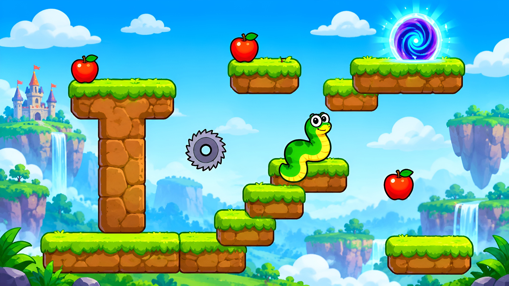
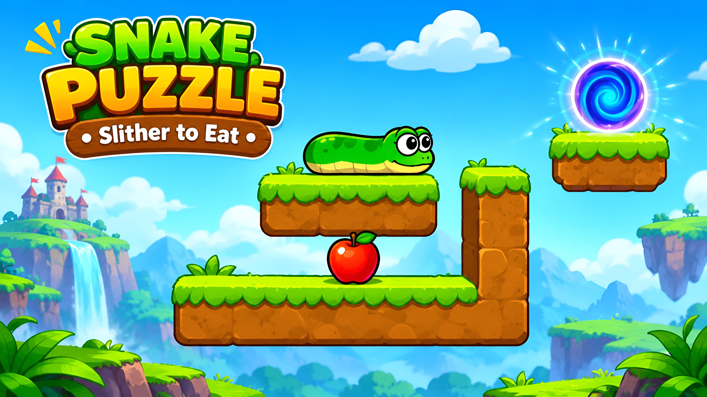
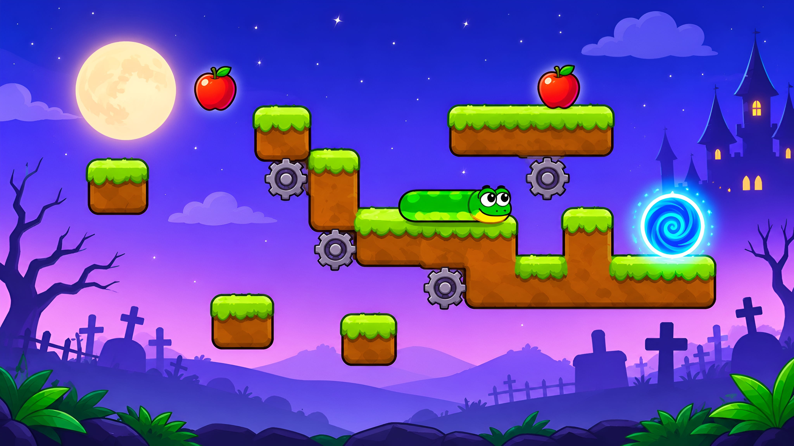
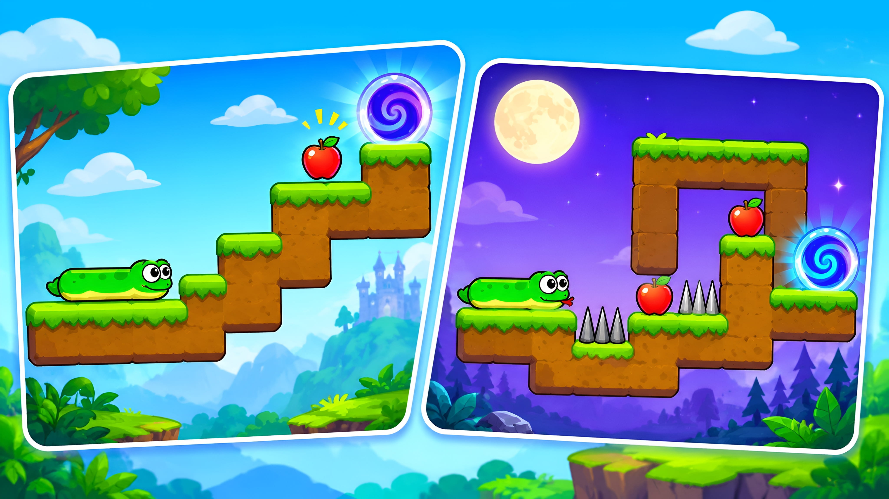

Snake Puzzle: Slither to Eat is a single-player mobile puzzle game from Brave HK Limited. It takes the familiar idea of a snake eating food and turns it into a route-planning challenge. Instead of simply collecting food to chase a high score, you must eat apples, grow to the right length, and guide the snake to a teleportation portal.
The rules are easy to understand, but each level asks you to think about where the snake needs to go and how much it must grow before reaching the exit. The Google Play listing shows more than 10 million downloads, which makes the game a notable title in the mobile puzzle category. This guide explains its main idea, how to approach the puzzles, what to expect from the app, and the important details to check before installing it.
What Is Snake Puzzle: Slither to Eat?
Snake Puzzle: Slither to Eat is a logic-based puzzle game built around three simple elements: a snake, apples, and a portal. Each level gives you a small puzzle area with a route to work out. Your job is to move the snake, collect apples, and make it long enough to reach the portal.
Every apple adds another segment to the snake. That growth is the central puzzle mechanic. You cannot treat an apple as just a collectible; you need to consider how the extra length will help you reach the destination. A route that looks simple at first may become harder once the snake grows and has to move through the available space.
The game is listed on Google Play under the Puzzle category, with logic, single-player, stylized, and snake-related tags. It is designed for players who enjoy short challenges that reward planning rather than fast reactions.

How the Gameplay Works
The main objective is to reach the portal after collecting the apples needed for the level. The snake becomes longer as it eats, so the order and direction of your moves matter. Before moving, look at the platforms, gaps, apple positions, and the portal's location. A little planning can help you avoid taking a route that leaves the snake in an awkward position.
Apples Make the Snake Longer
Apples are essential to completing the puzzle. Each one increases the snake's length by adding a body segment. This growth is not only a reward; it changes what the snake can reach. Think about which apples you need and how collecting them will affect your next move.

The Portal Is the Goal
After growing to the required length, guide the snake to the teleportation portal. Reaching the portal completes the level. The challenge is to connect the apple-collecting route with the final route to the exit, instead of thinking about each move separately.
How to Play Snake Puzzle: Slither to Eat
The exact layout changes from one puzzle to another, but the basic approach stays the same. Start by checking where the snake is, where the apples are placed, and where the portal is located. Then work out a route that lets you collect the required apples and finish at the exit.
- Study the level: Look over the platforms, open spaces, apples, and portal before making your first move.
- Plan the apple route: Decide which apples you need to collect and think about the order that makes the route easiest to follow.
- Move carefully: Use the on-screen controls to guide the snake. Avoid making a turn without considering where the longer body will go next.
- Check your length: Remember that every apple adds a segment. Consider whether the snake will be long enough to reach the portal after collecting them.
- Reach the portal: Once you have collected the apples needed for the puzzle, guide the snake to the teleportation portal to complete the level.
The Google Play listing describes the game as easy to learn but increasingly challenging. If a level does not work out, pause and reconsider the route rather than repeating the same moves without a plan. The available listing does not provide a complete control manual, so check the instructions shown inside the game for the exact controls on your device.

Main Features of Snake Puzzle: Slither to Eat
1. Strategic Puzzle Gameplay
The game turns snake movement into a planning task. You need to think about the route, apple locations, and the snake's growing length before choosing your next move. This gives each level a clear goal and a small problem to solve.
2. Simple Core Rules
The main idea is straightforward: move, eat apples, grow, and reach the portal. Players do not need to learn a long list of gameplay systems before understanding what each puzzle asks them to do.
3. Increasing Challenge
The developer's description says the puzzles become more complex as the snake grows. Later challenges can require more careful route planning, making it important to think beyond the next apple and consider how the whole path will work.
4. Single-Player Experience
Google Play identifies the game as single-player. You can focus on the puzzle in front of you without needing to compete against another player in a live match.
5. Stylized Visuals and Snake Theme
The game uses a colourful, stylized presentation built around a cartoon snake, apples, platforms, and a portal. Its simple visual language helps keep attention on the level and the route you need to solve.

Tips for Solving Difficult Levels
Some levels may look confusing because the snake needs to grow while still following a route that leads to the portal. These practical habits can make the puzzles easier to understand:
- Look at the whole board first: Identify the start, every visible apple, the platforms, and the portal before moving.
- Think about the final position: Do not focus only on reaching the next apple. Ask whether the snake can still reach the portal after collecting it.
- Plan the order of collection: Consider whether one apple should be collected before another based on the route available in that level.
- Remember the added length: Each apple changes the snake's size. Keep that change in mind when planning turns and movement through narrow areas.
- Break the puzzle into stages: Think of the route as a start, an apple-collecting section, and a final path to the portal.
- Learn from a failed attempt: If a route does not work, identify the move that caused the problem and try a different path.
There is no single solution that works for every level. The best route depends on the arrangement of the platforms, apples, and portal in the puzzle you are playing.
What Makes It Different from Classic Snake Games?
Traditional snake games usually focus on collecting food, getting longer, avoiding your own body or obstacles, and surviving for as long as possible. Snake Puzzle: Slither to Eat uses the growing-snake idea for a different purpose: solving a fixed puzzle and reaching an exit.
That change affects how you play. Speed and a high score are not the main focus. Instead, you need to plan where the snake should move, which apples it should collect, and how its new length will help it reach the portal. Players who enjoy logic puzzles may find this approach more appealing than an endless arcade-style snake game.
Pros and Cons
Pros
- Simple core rules that are easy to understand.
- Combines a familiar snake mechanic with route-planning puzzles.
- Single-player gameplay is suitable for short play sessions.
- Growing the snake gives each apple a clear purpose in the puzzle.
- Offers a different style of challenge from classic score-based snake games.
Cons
- The game contains advertisements, which may interrupt play.
- Some player reviews report frequent ads between levels or after failed attempts.
- Some reviewers mention repeated or less challenging levels after longer play.
- In-app purchases are available, so check the listed prices before buying anything.
These points are not guaranteed to describe every player's experience. They reflect the game's listed monetization and themes raised in some Google Play reviews. Your experience may differ depending on the version, region, and how long you play.
Ads and In-App Purchases
Snake Puzzle: Slither to Eat is listed as free to download on Google Play, but the store page states that it contains ads and in-app purchases. Free installation does not mean every part of the experience is free from advertising or optional purchases.
The pricing information supplied for this article shows in-app purchase items ranging from BDT 100.00 to BDT 1,000.00 per item. The exact price can vary by item, country, tax, and Google Play account settings. Review the purchase screen carefully before confirming a payment, and use Google Play purchase authentication if a child or another person may use the device.
Game Information and Android Requirements
The following details are based on the Google Play information supplied for this article. Store information can change when the developer releases an update, so check the listing again before installing if you need the latest version or device requirements.
| Game name | Snake Puzzle: Slither to Eat |
|---|---|
| Developer / Offered by | Brave HK Limited |
| Category | Puzzle |
| Game type | Logic puzzle, single-player |
| Latest supplied version | 14.2.9 |
| Last updated | November 3, 2026 |
| Released on | August 22, 2025 |
| Downloads | 10,000,000+ downloads |
| Download size | 138 MB |
| Required OS | Android 7.0 and up |
| Content rating | Rated for 3+ (as shown in the supplied listing screenshot) |
| Price | Free to download; contains ads and in-app purchases |
| In-app purchase range | BDT 100.00–BDT 1,000.00 per item |
| Supported platforms | Android; Google Play also displays a PC play option through Google Play Games on supported devices |
The download size and Android requirement above are the details provided with this article. Actual storage needed after installation may be different because the app can download or create additional data. Keep some extra free space available on your device.
Privacy and Data Safety
Before installing any mobile game, it is worth checking its Data safety section on Google Play. The store listing for this app says the developer may collect and share certain data types, including location, app activity, and device or other IDs. The listing also displays disclosures about data encryption and deletion. These disclosures are supplied by the developer and may change, so read the current Data safety information on Google Play for the latest details.
If you are installing the game for a child, review the app's content rating, advertising, in-app purchase options, and device purchase controls first. A 3+ content rating does not mean that the app has no advertisements or optional purchases.
Is Snake Puzzle: Slither to Eat Worth Playing?
Snake Puzzle: Slither to Eat may be a good choice if you enjoy casual logic games and like working out a route before making a move. Its main idea is easy to understand, while the need to grow the snake and still reach the portal gives each level a clear planning challenge.
It may be less appealing if you dislike mobile advertisements or prefer games with a completely new challenge in every stage. Some Google Play reviewers have raised concerns about ad frequency and repeated levels, so it is sensible to keep those points in mind. Overall, it is worth trying if you enjoy simple, single-player puzzle games and are comfortable with an ad-supported free download.
View Snake Puzzle: Slither to Eat on Google Play
Frequently Asked Questions
What is Snake Puzzle: Slither to Eat?
It is a single-player puzzle game by Brave HK Limited. You guide a snake through each level, eat apples to make it longer, and reach the teleportation portal.
Is Snake Puzzle: Slither to Eat free to download?
Yes. The Google Play listing offers the game as a free download. However, it contains ads and optional in-app purchases.
What Android version is required?
The supplied Google Play details list Android 7.0 and up. Check the current store listing to confirm compatibility with your device.
How do you complete a level?
Study the level, collect the apples needed to grow the snake, and guide it to the portal. The best route depends on the position of the platforms, apples, and exit in that level.
Can I play Snake Puzzle: Slither to Eat on a PC?
The Google Play page shows a PC play option through Google Play Games. You need a supported Windows PC and Google Play Games availability in your region.
Does the game work without an internet connection?
Offline support is not clearly confirmed in the available store information. Check the game or contact the developer before assuming that all levels and features work offline.
Does the game contain advertisements?
Yes. Google Play marks the app as containing ads. Some user reviews also mention frequent advertisements during play.
Who developed Snake Puzzle: Slither to Eat?
The Google Play listing identifies Brave HK Limited as the developer.
Official Source
Final Thoughts
Snake Puzzle: Slither to Eat gives the classic snake idea a puzzle-focused twist. Eating apples makes the snake longer, but the real challenge is using that extra length to reach the portal. Its simple rules, single-player format, and route-planning mechanics make it an option for players who enjoy casual logic challenges.
The main things to consider before installing are the advertisements, optional purchases, and the possibility that some levels may feel repetitive over time. If those points are acceptable to you, you can try the game on Android and see whether its puzzles match your style of play.